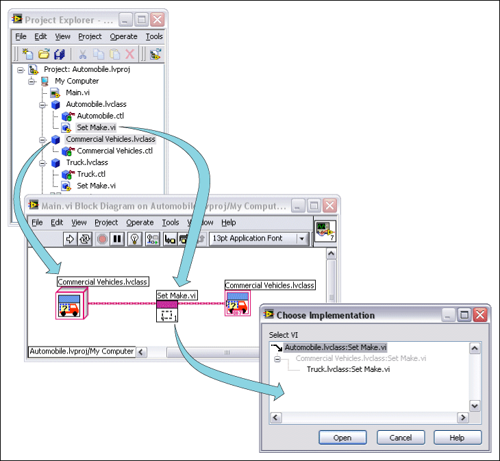

Viewing and Opening Implementations of Dynamic Dispatch Member VIs
Dynamic dispatch subVIs can call any one of a set of VIs in a LabVIEW class hierarchy. LabVIEW determines which implementation of the subVI to call at run time, depending on the class or interface data type flowing into the dynamic dispatch terminal.
Complete the following steps to open one or more implementations of a dynamic dispatch subVI using the Choose Implementation dialog box.
Double-click the dynamic dispatch VI on the block diagram. If one or more implementations exist for the VI, the Choose Implementation dialog box appears.
The arrow glyph indicates the implementation that executes if the run-time data type on the wire is the same as the edit-time data type on the wire. Because a LabVIEW class or interface wire can carry data of its own type or data of any child type, this glyph indicates that the implementation LabVIEW executes at run time will be at the glyph level or below in the class hierarchy.
LabVIEW lists all classes and interfaces in the LabVIEW class hierarchy. If a class inherits the dynamic dispatch member VI from an ancestor class but does not have its own implementation, LabVIEW dims the class or interface in the Select VI list.
Additionally, if the class or interface wired to the VI on the block diagram does not have its own implementation of the VI, the arrow glyph appears to the left of the ancestor class or interface from which it inherits the VI in the Select VI list. In the example below, the Commercial Vehicles class inherits the Set Make VI from the Automobile class. Because the Commercial Vehicles class is wired to the ancestor implementation of the Set Make VI on the block diagram, the arrow glyph appears next to the ancestor implementation.

Select the VI in the Select VI list that you want to open.
You also can open multiple VIs by holding the <Ctrl> key and selecting multiple VIs. (macOS) Hold the <Option> key. (Linux) Hold the <Alt> key.
Click the Open button to close the dialog box and open the VI or VIs you selected.